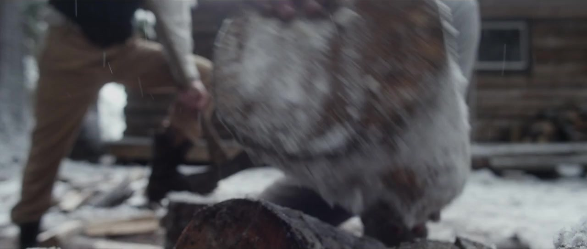
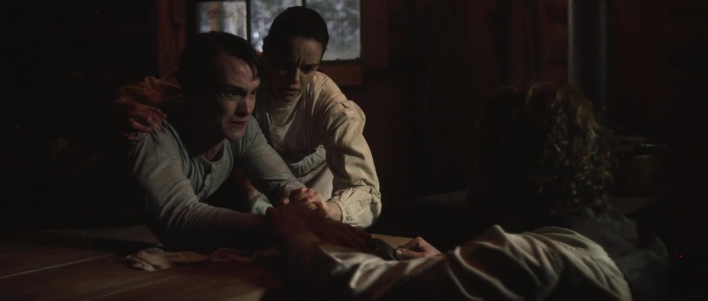
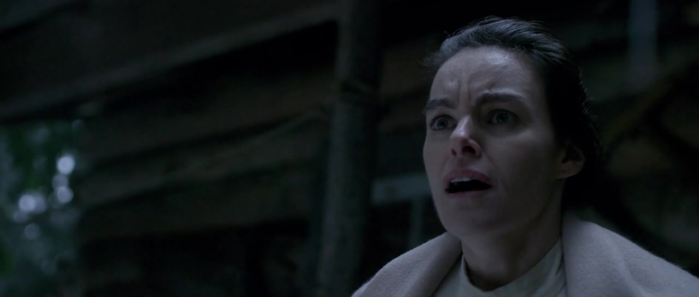
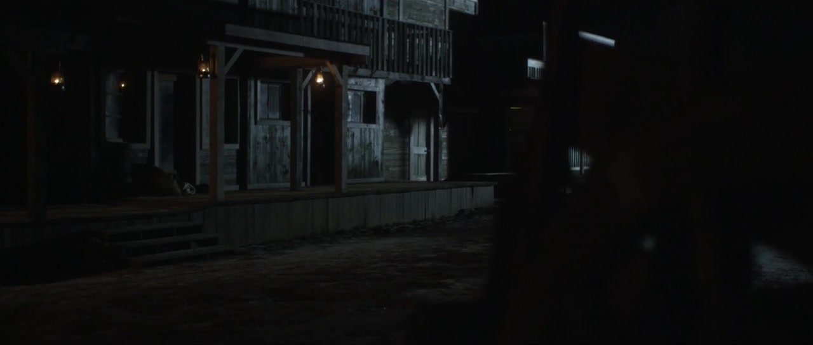

One With the Devil
Cinematographer











- credit
- dir. Drew Pollins
- credit
- Leo Award, Best Cinematography in a Short Drama (2015)
- credit
- Canadian Society of Cinematographers Award
One With the Devil
Cinematographer



